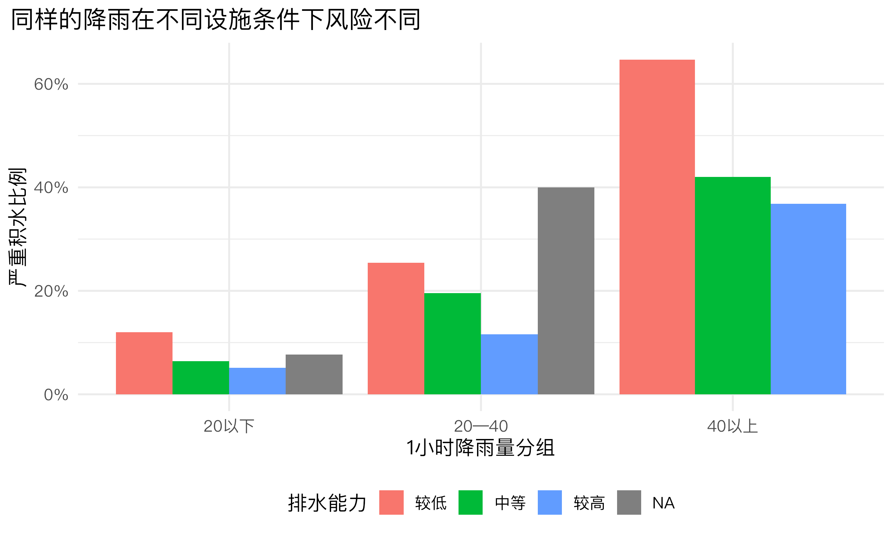
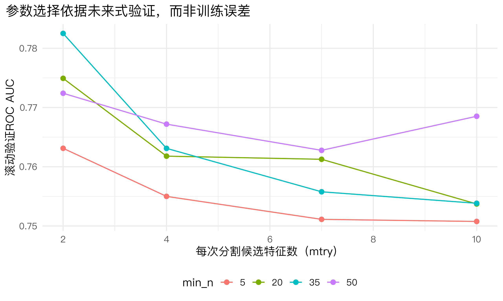
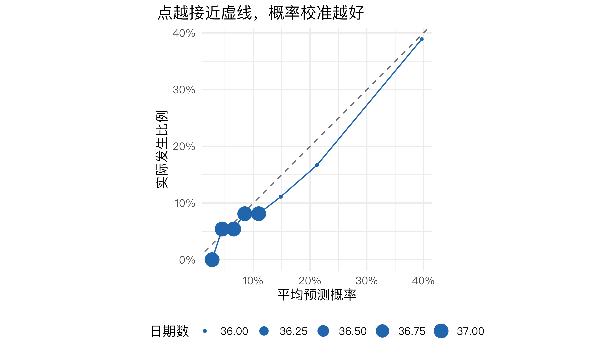
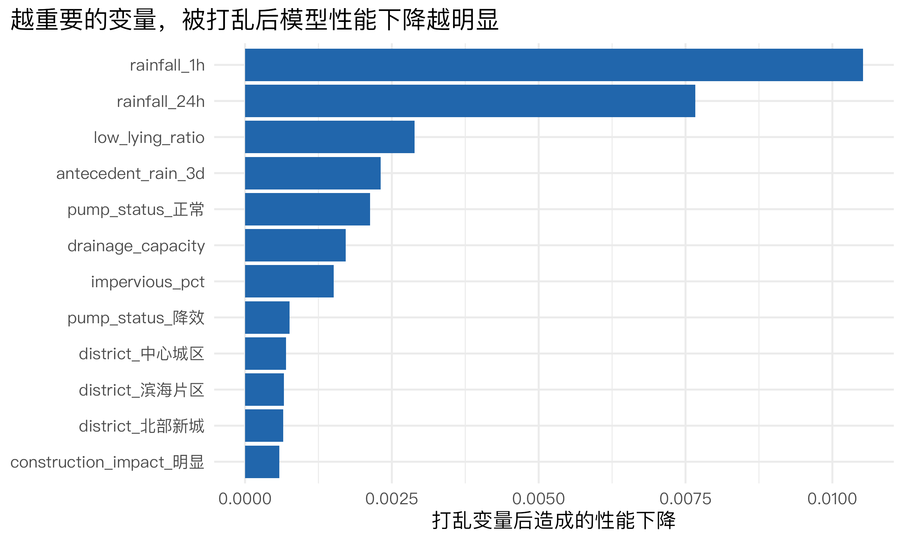
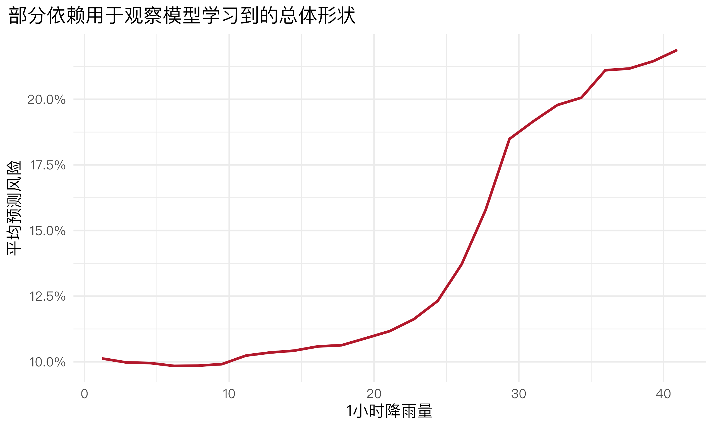

install.packages(c(
"tidymodels",
"ranger",
"xgboost",
"lubridate",
"systemfonts",
"ragg",
"knitr",
"scales",
"tibble"
))机器学习（四）：随机森林与梯度提升
以城市积水风险预警为例
本讲的中心问题
应急和市政部门希望在强降雨来临前识别严重积水风险，以提前布置排水、交通疏导和应急力量。本讲比较三种思路：逻辑回归提供线性基准，随机森林通过许多棵相互差异的树降低波动，梯度提升则让后续树持续修正前面模型的错误。
1 课程安排与学习目标
本讲按照 2课时（每课时45分钟） 设计。
| 课时 | 核心内容 | 课堂产出 |
|---|---|---|
| 第1课时 | 装袋法、随机森林、OOB思想、超参数 | 建立并调优积水风险随机森林 |
| 第2课时 | 梯度提升、模型比较、阈值与治理审计 | 比较模型并形成可复核的预警建议 |
完成本讲后，学生应能：
- 解释单棵树高方差以及集成学习的基本动机；
- 区分装袋法、随机森林和梯度提升；
- 解释
trees、mtry、min_n、tree_depth和learn_rate； - 说明OOB误差和时间外测试各自的作用；
- 使用滚动验证调优随机森林和XGBoost；
- 比较模型的ROC AUC、PR AUC、敏感度、精确率和混淆矩阵；
- 使用验证预测比较预警阈值，并解释漏报与误报成本；
- 检查概率校准和分地区错误，填写简化模型卡；
- 正确解释变量重要性和部分依赖图的边界。
首次运行前安装R包
本讲不需要安装 vip，也不需要额外安装整个 tidyverse。变量重要性直接从 ranger 模型中提取。
2 从城市治理问题定义预测任务
2.1 为什么积水风险可能需要集成树？
严重积水往往不是某一个因素单独造成的，而是降雨强度、前期土壤含水、地势、不透水率、排水能力、潮位和泵站状态共同作用的结果。这里可能存在：
- 阈值效应：短时雨强超过一定水平后风险突然上升；
- 非线性：排水能力提高的边际作用并不恒定；
- 交互作用：强降雨在低洼且排水能力不足的地区影响更大；
- 变量替代：24小时降雨与前期降雨高度相关；
- 时变关系：设施改造和城市建设会改变历史规律。
单棵树能够表示阈值和交互，但对样本扰动较敏感。集成树用许多棵树共同预测，通常能提高稳定性和精度。
2.2 三种方法的核心差异
| 方法 | 如何学习 | 主要优势 | 主要局限 |
|---|---|---|---|
| 逻辑回归 | 在对数优势上拟合加性线性关系 | 易解释、训练快、适合作基准 | 非线性和交互需人工指定 |
| 随机森林 | 并行训练许多随机化树，再投票或平均 | 稳定、调参相对简单、抗非线性 | 单个预测规则不再直观 |
| 梯度提升 | 按顺序训练树，后续树修正已有错误 | 预测能力强，可细致控制复杂度 | 参数较多、训练较慢、较易过拟合 |
预测边界
模型预测的是“在给定监测、设施和天气条件下出现积水的风险”，不直接回答“某项排水工程减少了多少积水”。后者需要政策实施前后数据、对照组或其他因果识别设计。
3 准备自带的模拟城市积水数据
3.1 数据生成逻辑
下面模拟2022—2025年的逐日城市运行记录。数据只用于教学，不代表任何城市的真实风险水平。
set.seed(2026)
dates <- seq.Date(
from = as.Date("2022-01-01"),
to = as.Date("2025-12-31"),
by = "day"
)
n_days <- length(dates)
district_levels <- c("中心城区", "滨海片区", "北部新城", "西部片区", "东部片区")
district <- factor(sample(district_levels, n_days, replace = TRUE))
month <- lubridate::month(dates)
wet_season <- month %in% 5:9
district_impervious <- c(
"中心城区" = 82, "滨海片区" = 72, "北部新城" = 68,
"西部片区" = 57, "东部片区" = 64
)
district_drainage <- c(
"中心城区" = 62, "滨海片区" = 54, "北部新城" = 67,
"西部片区" = 49, "东部片区" = 59
)
district_lowlying <- c(
"中心城区" = 0.24, "滨海片区" = 0.38, "北部新城" = 0.18,
"西部片区" = 0.33, "东部片区" = 0.27
)
waterlogging_base <- tibble(
date = dates,
district = district,
weekend = factor(if_else(
lubridate::wday(date, week_start = 1) >= 6, "是", "否"
)),
rainfall_1h = rgamma(n_days, shape = 1.35, scale = 11) *
if_else(wet_season, 1.45, 0.75),
antecedent_rain_3d = rgamma(n_days, shape = 1.8, scale = 17) *
if_else(wet_season, 1.25, 0.70),
tide_level = pmax(0.2, rnorm(n_days, 1.25, 0.42)),
impervious_pct = pmin(
95, pmax(35, unname(district_impervious[as.character(district)]) +
rnorm(n_days, 0, 5))
),
drainage_capacity = pmin(
90, pmax(25, unname(district_drainage[as.character(district)]) +
rnorm(n_days, 0, 7))
),
low_lying_ratio = pmin(
0.65, pmax(0.05, unname(district_lowlying[as.character(district)]) +
rnorm(n_days, 0, 0.06))
),
pump_status = factor(sample(
c("正常", "降效", "故障"), n_days, replace = TRUE,
prob = c(0.84, 0.12, 0.04)
)),
maintenance_gap_days = pmin(round(rexp(n_days, rate = 1 / 75)), 365),
construction_impact = factor(sample(
c("无", "轻微", "明显"), n_days, replace = TRUE,
prob = c(0.68, 0.23, 0.09)
)),
sensor_coverage = pmin(1, pmax(0.35, rnorm(n_days, 0.78, 0.11)))
) |>
mutate(
rainfall_24h = rainfall_1h + rgamma(n_days, shape = 1.5, scale = 13)
)
# 模拟非线性、阈值与交互共同形成的严重积水概率。
waterlogging_score <- with(
waterlogging_base,
-4.8 +
0.035 * rainfall_1h +
0.012 * rainfall_24h +
0.010 * antecedent_rain_3d +
0.80 * (impervious_pct > 75) +
0.95 * (drainage_capacity < 50) +
0.80 * (low_lying_ratio > 0.30) +
0.55 * (pump_status == "降效") +
1.35 * (pump_status == "故障") +
0.65 * (tide_level > 1.65) +
0.55 * (construction_impact == "明显") +
1.15 * (rainfall_1h > 40 & drainage_capacity < 55) +
0.85 * (rainfall_24h > 70 & antecedent_rain_3d > 45)
)
waterlogging_data <- waterlogging_base |>
mutate(
severe_waterlogging = factor(
if_else(
runif(n_days) < plogis(waterlogging_score),
"严重积水", "未发生"
),
levels = c("严重积水", "未发生")
)
)
# 模拟少量传感器和设施记录缺失。
set.seed(2027)
waterlogging_data$tide_level[sample(seq_len(nrow(waterlogging_data)), 20)] <- NA
waterlogging_data$drainage_capacity[sample(seq_len(nrow(waterlogging_data)), 18)] <- NA
waterlogging_data3.2 数据审计与风险分布
waterlogging_audit <- waterlogging_data |>
summarise(
days = n(),
start_date = min(date),
end_date = max(date),
events = sum(severe_waterlogging == "严重积水"),
event_rate = mean(severe_waterlogging == "严重积水"),
missing_tide = sum(is.na(tide_level)),
missing_drainage = sum(is.na(drainage_capacity))
)
waterlogging_audit数据包含 1461 个日期，从 2022-01-01 到 2025-12-31；严重积水 174 次，占 11.9%。事件比例低于50%时，准确率容易被多数类别主导，因此后面重点同时查看ROC AUC和敏感度。
waterlogging_data |>
mutate(
drainage_group = cut(
drainage_capacity,
breaks = c(-Inf, 50, 65, Inf),
labels = c("较低", "中等", "较高")
),
rain_group = cut(
rainfall_1h,
breaks = c(-Inf, 20, 40, Inf),
labels = c("20以下", "20—40", "40以上")
)
) |>
group_by(rain_group, drainage_group) |>
summarise(
risk = mean(severe_waterlogging == "严重积水", na.rm = TRUE),
days = n(),
.groups = "drop"
) |>
ggplot(aes(rain_group, risk, fill = drainage_group)) +
geom_col(position = "dodge") +
scale_y_continuous(labels = scales::percent) +
labs(
x = "1小时降雨量分组", y = "严重积水比例",
fill = "排水能力", title = "同样的降雨在不同设施条件下风险不同"
)
4 训练—验证—测试设计
4.1 为什么继续使用时间划分？
积水数据具有季节性，设施和城市建设也会随时间变化。随机打乱日期可能让未来模式进入训练集，夸大部署效果。因此用前80%日期训练，最后20%模拟真正的未来测试期。
model_data <- waterlogging_data |>
arrange(date)
waterlogging_split <- initial_time_split(model_data, prop = 0.80)
waterlogging_train <- training(waterlogging_split)
waterlogging_test <- testing(waterlogging_split)
time_split_summary <- tibble(
dataset = c("训练期", "测试期"),
start = c(min(waterlogging_train$date), min(waterlogging_test$date)),
end = c(max(waterlogging_train$date), max(waterlogging_test$date)),
days = c(nrow(waterlogging_train), nrow(waterlogging_test)),
event_rate = c(
mean(waterlogging_train$severe_waterlogging == "严重积水"),
mean(waterlogging_test$severe_waterlogging == "严重积水")
)
)
time_split_summary训练期有 1168 天，测试期有 293 天。测试期从 2025-03-14 开始，严格晚于训练期。两段事件率不必完全相同；这种变化正是未来部署必须面对的分布漂移。
4.2 共同的 recipe 与滚动验证
ensemble_recipe <- recipe(
severe_waterlogging ~ district + weekend + rainfall_1h + rainfall_24h +
antecedent_rain_3d + tide_level + impervious_pct +
drainage_capacity + low_lying_ratio + pump_status +
maintenance_gap_days + construction_impact + sensor_coverage,
data = waterlogging_train
) |>
step_impute_median(all_numeric_predictors()) |>
step_unknown(all_nominal_predictors()) |>
step_novel(all_nominal_predictors()) |>
# XGBoost需要数值矩阵，因此将类别变量转为0/1变量。
step_dummy(all_nominal_predictors()) |>
step_zv(all_predictors())
# 每次用至少600天训练，再评价随后的90天。
waterlogging_folds <- rolling_origin(
waterlogging_train,
initial = 600,
assess = 90,
cumulative = TRUE,
skip = 89
)
waterlogging_folds本次生成 6 个滚动窗口。树模型通常不需要标准化，因为分割依赖变量排序而非距离；但随机森林和XGBoost使用同一份哑变量预处理，便于公平比较。
5 第1课时：随机森林
5.1 从装袋法到随机森林
装袋法的步骤是：
- 从训练数据中有放回抽样，得到多个自助样本；
- 在每个样本上训练一棵树；
- 对分类结果进行多数投票，对概率进行平均。
随机森林在此基础上增加一个随机化步骤：每个节点分割时，只允许从随机抽取的 mtry 个特征中寻找最佳变量。这会让各棵树更加不同，降低树之间的相关性，使平均结果更稳定。
5.2 随机森林何时适用？
随机森林较适合中等到较大的表格数据、非线性和交互较多、预测准确性优先于单条规则解释的情形。它不擅长超出训练范围的外推；事件极少、时间漂移严重或预测变量在实际运行时不可得时，也不会因为树很多而自动解决问题。
5.3 关键超参数
| 参数 | 含义 | 典型取舍 |
|---|---|---|
trees |
森林中树的数量 | 增多通常使结果更稳定，但计算更慢 |
mtry |
每个节点随机提供的候选特征数 | 较小可增加树的差异，过小会错过有效分割 |
min_n |
节点继续分割所需最小样本量 | 较小产生更深的树，可能拟合噪声 |
树的数量通常增加到误差趋于稳定即可；mtry 和 min_n 更需要通过重采样选择。
5.4 调优随机森林
rf_model <- rand_forest(
mtry = tune(),
trees = 500,
min_n = tune()
) |>
set_engine(
"ranger",
importance = "permutation",
probability = TRUE
) |>
set_mode("classification")
rf_workflow <- workflow() |>
add_recipe(ensemble_recipe) |>
add_model(rf_model)
rf_grid <- grid_regular(
mtry(range = c(2L, 10L)),
min_n(range = c(5L, 50L)),
levels = 4
)
classification_metrics <- metric_set(
roc_auc, pr_auc, accuracy, sens, spec, ppv, f_meas
)
set.seed(2026)
rf_tune <- tune_grid(
rf_workflow,
resamples = waterlogging_folds,
grid = rf_grid,
metrics = classification_metrics,
# 保存各滚动窗口的预测，供后面比较不同预警阈值。
control = control_grid(save_pred = TRUE)
)
rf_best_results <- show_best(rf_tune, metric = "roc_auc", n = 8)
rf_best_results本次最优候选方案使用 mtry = 2、min_n = 35，滚动验证ROC AUC约为 0.783。如果前几组参数表现非常接近，应优先选择更稳健、运行更快的方案，而不要过度解读千分位差异。
collect_metrics(rf_tune) |>
filter(.metric == "roc_auc") |>
ggplot(aes(mtry, mean, colour = factor(min_n), group = min_n)) +
geom_line() +
geom_point(size = 2.2) +
labs(
x = "每次分割候选特征数（mtry）",
y = "滚动验证ROC AUC",
colour = "min_n",
title = "参数选择依据未来式验证，而非训练误差"
)
5.5 最终随机森林与OOB信息
best_rf_params <- select_best(rf_tune, metric = "roc_auc")
final_rf_workflow <- finalize_workflow(rf_workflow, best_rf_params)
final_rf_fit <- fit(final_rf_workflow, data = waterlogging_train)
rf_engine <- extract_fit_engine(final_rf_fit)
tibble(
trees = rf_engine$num.trees,
mtry = rf_engine$mtry,
oob_prediction_error = rf_engine$prediction.error
)每棵树的自助样本平均约包含原训练记录的63.2%，未被抽中的记录可作为该树的袋外样本。ranger概率森林输出的 prediction.error 是袋外Brier误差，越小表示袋外概率与实际类别越接近。OOB结果便于快速诊断，但本讲仍保留独立未来测试期，因为时间漂移不能由随机袋外样本充分模拟。
5.6 从概率到行动：阈值不是固定的0.50
模型输出的是严重积水概率，只有指定阈值后才会形成“预警/不预警”的类别。下面只使用训练期内部的滚动验证预测比较0.30、0.50和0.70三个阈值，不查看最终测试期。
rf_validation_pred <- collect_predictions(
rf_tune,
parameters = best_rf_params
)
threshold_comparison <- map_dfr(
c(0.30, 0.50, 0.70),
function(threshold) {
predicted_class <- factor(
if_else(
rf_validation_pred$.pred_严重积水 >= threshold,
"严重积水", "未发生"
),
levels = c("严重积水", "未发生")
)
tibble(
threshold = threshold,
alerts = sum(predicted_class == "严重积水"),
sensitivity = sens_vec(
rf_validation_pred$severe_waterlogging,
predicted_class,
event_level = "first"
),
specificity = spec_vec(
rf_validation_pred$severe_waterlogging,
predicted_class,
event_level = "first"
),
precision = ppv_vec(
rf_validation_pred$severe_waterlogging,
predicted_class,
event_level = "first"
),
f1 = f_meas_vec(
rf_validation_pred$severe_waterlogging,
predicted_class,
event_level = "first"
)
)
}
)
threshold_comparison阈值降到0.30时，预警数量通常增加、敏感度提高，但精确率和特异度可能下降；阈值提高到0.70时，误报通常减少，但漏报可能增加。若预警只触发低成本巡查，可以偏向较低阈值；若会直接启动交通管制或大规模应急响应，则需要更严格地权衡误报成本。
阈值选择的规则
阈值应根据历史验证数据中的漏报成本、误报成本和资源能力确定。最终测试期只用于评价已经确定的模型和阈值，不能看完测试结果后反复调整。
6 第2课时：梯度提升与模型比较
6.1 梯度提升怎样学习？
随机森林中的树可以并行训练；梯度提升中的树必须按顺序训练。第一棵树给出初始预测，后续每棵较浅的树都针对当前模型尚未解释好的部分进行修正：
\[ F_m(x)=F_{m-1}(x)+\eta h_m(x) \]
其中 \(h_m(x)\) 是第 \(m\) 棵树，\(\eta\) 是学习率。较小的学习率意味着每棵树只做小幅修正，通常需要更多树，但可能获得更稳定的泛化表现。
6.2 关键超参数与适用条件
| 参数 | 含义 | 过大时的风险 |
|---|---|---|
trees |
迭代轮数 | 训练更慢，可能继续拟合噪声 |
tree_depth |
每棵弱树的深度 | 交互过多、过拟合 |
learn_rate |
每轮修正幅度 | 学习过快、验证误差反弹 |
min_n |
叶节点所需样本量 | 叶节点过碎或过于保守 |
sample_size |
每轮使用的训练样本比例 | 太小会增加随机波动 |
梯度提升适合复杂非线性表格数据，但参数更多，必须使用训练期内部的重采样调优。样本很小、解释性优先或简单模型已足够时，不应默认选择它。
6.3 调优XGBoost
xgb_model <- boost_tree(
trees = 400,
tree_depth = tune(),
learn_rate = tune(),
min_n = tune(),
loss_reduction = 0,
sample_size = 0.80
) |>
set_engine("xgboost") |>
set_mode("classification")
xgb_workflow <- workflow() |>
add_recipe(ensemble_recipe) |>
add_model(xgb_model)
# learn_rate采用以10为底的对数尺度：10^-3、10^-2、10^-1。
xgb_grid <- grid_regular(
tree_depth(range = c(2L, 6L)),
learn_rate(range = c(-3, -1)),
min_n(range = c(5L, 30L)),
levels = 3
)
set.seed(2026)
xgb_tune <- tune_grid(
xgb_workflow,
resamples = waterlogging_folds,
grid = xgb_grid,
metrics = classification_metrics
)
xgb_best_results <- show_best(xgb_tune, metric = "roc_auc", n = 8)
xgb_best_results最优候选方案的树深度为 2、学习率为 1e-02、min_n 为 5，滚动验证ROC AUC约为 0.788。学习率与树数量需要共同理解：学习率较小通常要增加树数，不能只比较单个参数。
6.4 加入逻辑回归基准
复杂模型必须与简单模型比较。逻辑回归使用同一训练数据和预处理，但不调参。
logistic_model <- logistic_reg() |>
set_engine("glm") |>
set_mode("classification")
logistic_workflow <- workflow() |>
add_recipe(ensemble_recipe) |>
add_model(logistic_model)
best_xgb_params <- select_best(xgb_tune, metric = "roc_auc")
final_xgb_workflow <- finalize_workflow(xgb_workflow, best_xgb_params)
final_logistic_fit <- fit(logistic_workflow, data = waterlogging_train)
final_xgb_fit <- fit(final_xgb_workflow, data = waterlogging_train)
logistic_test_pred <- bind_cols(
waterlogging_test,
predict(final_logistic_fit, waterlogging_test, type = "prob"),
predict(final_logistic_fit, waterlogging_test, type = "class")
)
rf_test_pred <- bind_cols(
waterlogging_test,
predict(final_rf_fit, waterlogging_test, type = "prob"),
predict(final_rf_fit, waterlogging_test, type = "class")
)
xgb_test_pred <- bind_cols(
waterlogging_test,
predict(final_xgb_fit, waterlogging_test, type = "prob"),
predict(final_xgb_fit, waterlogging_test, type = "class")
)6.5 在未来测试期比较模型
evaluate_classifier <- function(predictions, model_name) {
classification_metrics(
predictions,
truth = severe_waterlogging,
estimate = .pred_class,
.pred_严重积水,
event_level = "first"
) |>
mutate(model = model_name)
}
test_comparison <- bind_rows(
evaluate_classifier(logistic_test_pred, "逻辑回归"),
evaluate_classifier(rf_test_pred, "随机森林"),
evaluate_classifier(xgb_test_pred, "XGBoost")
) |>
select(model, .metric, .estimate) |>
arrange(.metric, desc(.estimate))
test_comparison未来测试期中，随机森林ROC AUC为 0.771，XGBoost为 0.78，逻辑回归为 0.791。
如果集成树只比逻辑回归高出很小幅度，应结合运行成本、解释需要和跨时期稳定性判断是否值得采用。不能仅凭测试期千分位差异宣称某模型“显著更好”。
随机森林的PR AUC为 0.343。ROC AUC考察两类样本的总体排序，PR AUC更关注稀少事件中“预警能抓住多少、发出的预警有多少是真的”。严重积水比例较低时，PR AUC通常比准确率更能反映实际预警价值。
随机森林在默认0.50阈值下的敏感度为 5.9%，特异度为 99.2%。预警任务若更重视避免漏报，应在历史滚动预测中降低阈值，再评估误报增加多少，而不能反复查看测试期调阈值。
随机森林的精确率为 50.0%，表示模型发出的积水预警中约有这一比例实际发生；F1为 0.105，用于综合平衡精确率和敏感度，但仍不能替代对漏报与误报成本的分别讨论。
rf_confusion <- rf_test_pred |>
count(severe_waterlogging, .pred_class, name = "days")
rf_confusion随机森林在测试期正确预警严重积水 2 天，漏报 32 天；误报 2 天，正确排除 257 天。治理部门需要把这些天数转换为应急资源、交通影响和公共安全成本。
6.6 概率校准：预测30%是否真的约发生30%？
ROC AUC较高只说明排序较好，不保证概率本身准确。下面把测试期按预测风险分为8组，比较每组的平均预测概率与实际发生比例。
rf_calibration <- rf_test_pred |>
mutate(
outcome = if_else(severe_waterlogging == "严重积水", 1, 0),
risk_group = ntile(.pred_严重积水, 8)
) |>
group_by(risk_group) |>
summarise(
days = n(),
mean_predicted = mean(.pred_严重积水),
actual_rate = mean(outcome),
.groups = "drop"
)
rf_brier_score <- rf_test_pred |>
summarise(
brier = mean(
(if_else(severe_waterlogging == "严重积水", 1, 0) -
.pred_严重积水)^2
)
) |>
pull(brier)
ggplot(rf_calibration, aes(mean_predicted, actual_rate)) +
geom_abline(linetype = 2, colour = "grey45") +
geom_line(colour = "#2166AC") +
geom_point(aes(size = days), colour = "#2166AC") +
scale_x_continuous(labels = scales::percent) +
scale_y_continuous(labels = scales::percent) +
coord_equal() +
labs(
x = "平均预测概率",
y = "实际发生比例",
size = "日期数",
title = "点越接近虚线，概率校准越好"
)
本次测试期Brier分数为 0.089。它是预测概率与0/1实际结果之间的平均平方误差，越小越好。若曲线长期位于虚线上方，表示模型低估风险；位于虚线下方则表示高估风险。测试期样本较小时，分组曲线会波动，因此不能过度解读单个点。
6.7 分地区误差审计
总体表现可能掩盖某些地区持续漏报。下面按行政片区核查实际事件数、预警数、敏感度和精确率。
district_audit <- rf_test_pred |>
group_by(district) |>
summarise(
days = n(),
actual_events = sum(severe_waterlogging == "严重积水"),
alerts = sum(.pred_class == "严重积水"),
true_positive = sum(
severe_waterlogging == "严重积水" &
.pred_class == "严重积水"
),
false_negative = sum(
severe_waterlogging == "严重积水" &
.pred_class == "未发生"
),
false_positive = sum(
severe_waterlogging == "未发生" &
.pred_class == "严重积水"
),
sensitivity = if_else(
actual_events > 0,
true_positive / actual_events,
NA_real_
),
precision = if_else(
alerts > 0,
true_positive / alerts,
NA_real_
),
.groups = "drop"
)
district_audit如果某个片区敏感度明显较低，应检查该地区的传感器覆盖、设施记录、样本数量和风险机制是否与训练期不同。分组差异不一定意味着算法歧视，也可能来自测量质量和事件基数差异，但都需要进一步核查。
7 模型解释：知道“依赖什么”，但不宣称因果
7.1 随机森林排列重要性
rf_importance <- tibble::enframe(
rf_engine$variable.importance,
name = "feature",
value = "importance"
) |>
arrange(desc(importance)) |>
slice_head(n = 12)
rf_importance |>
ggplot(aes(importance, reorder(feature, importance))) +
geom_col(fill = "#2166AC") +
labs(
x = "打乱变量后造成的性能下降", y = NULL,
title = "越重要的变量，被打乱后模型性能下降越明显"
)
排名第一的特征是 rainfall_1h。排列重要性衡量打乱某变量后预测性能下降多少；它比基于节点不纯度的重要性偏差更小，但相关变量仍可能互相替代，导致各自重要性被分散。高重要性不能直接解释为政策干预效果大。
7.2 降雨强度的部分依赖
rain_grid <- seq(
quantile(waterlogging_train$rainfall_1h, 0.05),
quantile(waterlogging_train$rainfall_1h, 0.95),
length.out = 25
)
# 每次把所有训练记录的rainfall_1h替换为同一个值，
# 再对预测概率取平均，得到一维部分依赖曲线。
rf_partial_dependence <- map_dfr(rain_grid, function(rain_value) {
counterfactual_data <- waterlogging_train |>
mutate(rainfall_1h = rain_value)
predicted_risk <- predict(
final_rf_fit,
counterfactual_data,
type = "prob"
)
tibble(
rainfall_1h = rain_value,
mean_predicted_risk = mean(predicted_risk$.pred_严重积水)
)
})
ggplot(
rf_partial_dependence,
aes(rainfall_1h, mean_predicted_risk)
) +
geom_line(linewidth = 1, colour = "#B2182B") +
scale_y_continuous(labels = scales::percent) +
labs(
x = "1小时降雨量",
y = "平均预测风险",
title = "部分依赖用于观察模型学习到的总体形状"
)
曲线上升表示模型总体上把更强降雨与更高积水风险联系起来；弯折位置反映模型学习到的阈值。它是对模型行为的描述，不是“把降雨人为增加一个单位会造成多少积水”的因果估计。若强降雨只出现在特定季节或潮位条件下，部分依赖还可能构造现实中很少出现的变量组合。
7.3 查看最高风险日期
rf_test_pred |>
arrange(desc(.pred_严重积水)) |>
select(
date, district, rainfall_1h, rainfall_24h,
drainage_capacity, pump_status,
actual = severe_waterlogging,
predicted = .pred_class,
risk = .pred_严重积水
) |>
slice_head(n = 10)这个表把概率转回具体治理情境：高风险日期是否同时出现短时强降雨、排水能力不足或泵站异常？如果最高风险记录与领域知识完全冲突，应先检查数据编码、预测时点和缺失填补，而不是立即部署模型。
8 用简化模型卡完成最终判断
模型表现较好不等于可以直接部署。完成分析后，应形成一张可以供管理者复核的模型卡。
| 项目 | 本案例需要回答的问题 |
|---|---|
| 决策用途 | 预警用于加强巡查、调度排水，还是直接启动交通管制？ |
| 预测对象 | 哪个日期、哪个片区可能发生严重积水？ |
| 预测时点 | 气象、潮位、设施状态在预警时是否真实可得？ |
| 数据范围 | 训练数据覆盖哪些年份、片区和设施条件？ |
| 基准模型 | 集成树是否明显超过逻辑回归？ |
| 主要指标 | 为什么同时使用ROC AUC、PR AUC、敏感度和精确率？ |
| 阈值依据 | 漏报和误报分别造成什么公共成本？ |
| 分组表现 | 哪些地区或时期的错误更集中？ |
| 禁止用途 | 不能把预测重要性当作工程或政策的因果效果 |
| 人工复核 | 谁确认预警、处理异议并记录最终行动？ |
| 更新条件 | 设施改造、传感器变化或气候异常后何时重新训练？ |
课堂综合判断不应只写“随机森林AUC最高，因此选择随机森林”，而应说明：模型相对基准改善多少、漏报和误报是否可接受、概率是否校准、哪些地区表现较弱，以及模型将怎样嵌入人工决策流程。
本讲在机器学习作业中的位置
机器学习作业只要求“一个朴素基准＋两个候选模型”，不要求把本讲所有模型和审计项目全部重复一遍。学生可以把逻辑回归或Lasso作为候选模型之一，再从决策树、随机森林或XGBoost中选择一种；随后完成至少一项阈值、分组误差或残差审计，并填写简化模型卡。评分重点是数据划分、基准比较、结果解释和治理边界，而不是算法数量。
9 其他公共管理应用场景
| 场景 | 预测任务 | 集成树的价值 | 主要风险 |
|---|---|---|---|
| 公共卫生 | 预测急诊需求高峰 | 捕捉天气、节假日与历史需求的交互 | 隐私、概率校准、资源挤占 |
| 社会政策 | 识别服务中断风险 | 处理多维家庭与服务记录 | 历史偏差和标签污名化 |
| 财政管理 | 预测项目延期或超支 | 处理复杂项目属性和阈值 | 预测不能替代责任认定 |
| 环境监管 | 识别企业异常排放风险 | 融合监测、生产和执法历史 | 执法选择偏差可能被复制 |
| 应急管理 | 预测灾害响应资源需求 | 自动学习非线性和交互 | 极端事件少、分布快速变化 |
10 本讲总结
- 集成学习通过组合多棵树提高稳定性和预测能力；
- 随机森林并行训练随机化树，梯度提升顺序修正错误；
mtry控制树之间的差异，min_n控制节点复杂度；- 学习率与树数量共同决定Boosting的学习速度；
- 时间型政策数据应使用滚动验证和独立未来测试；
- 复杂模型必须与简单基准比较；
- ROC AUC、PR AUC、精确率、敏感度和混淆矩阵回答不同问题；
- 阈值必须依据验证数据、行动成本和资源能力选择；
- 概率校准与分组审计可以发现总体指标掩盖的问题；
- 变量重要性和部分依赖解释模型行为，不识别政策因果效应；
- 预警系统还需模型卡、数据漂移监测和人工复核机制。
10.1 离堂检查
- 随机森林为什么在每个节点只提供部分候选特征？
- OOB误差为什么不能完全替代未来时间测试？
- 学习率降低后，树的数量一般需要怎样调整？
- 某变量排列重要性最高，能否证明优先治理它最有效？
- 为什么ROC AUC较高时，精确率仍可能很低？
- 为什么不能根据最终测试期反复修改预警阈值？
下一部分可进入无监督学习或文本分析：当没有明确结果标签时，如何从公共管理数据中发现结构与主题。
11 附录A：OOB样本与误差
每棵树从大小为 \(n\) 的训练集进行 \(n\) 次有放回抽样。一条记录一次也未被抽中的概率约为：
\[ \left(1-\frac{1}{n}\right)^n\approx e^{-1}\approx 0.368 \]
因此每棵树约有36.8%的记录可作袋外评价。OOB误差计算方便，但它仍来自同一历史时期；存在时间漂移、地区迁移或政策制度变化时，必须保留更符合部署情境的外部测试。
12 附录B：随机森林的参数选择
trees：增加到OOB或验证误差趋于稳定；更多树通常不会像Boosting那样直接导致过拟合，但会增加运行时间；mtry：过大使各树相似，过小可能错过强预测变量；min_n：较小允许更细的局部规则，较大则更平滑稳定；sample_size：较低增加随机性，但每棵树可学习的信息更少；- 分割规则：分类常用Gini，也可根据任务采用其他规则。
13 附录C：梯度提升与损失函数
梯度提升可以理解为在函数空间中沿损失函数的负梯度方向逐步更新。二分类XGBoost通常优化对数损失，并通过树复杂度惩罚、行列抽样和学习率控制过拟合。它的优势来自系统地修正错误，不是因为单棵树比随机森林更深。
14 附录D：XGBoost的进一步参数
除主文参数外，实际项目还常调节：
loss_reduction：节点分割需要带来的最小损失改善；sample_size：每轮训练使用的样本比例；mtry：每棵树或每个层级使用的特征比例；- L1/L2正则化：限制叶节点权重；
- early stopping：验证性能不再改善时停止增加树。
参数越多，搜索空间越大。课程中优先理解少数关键参数，不使用大规模穷举，也不因模型名称更先进而自动采用。
15 附录E：概率校准、SHAP与局部解释
ROC AUC只评价排序，不保证概率准确。真实预警系统还应检查校准曲线、Brier分数及不同时间和地区的校准误差。
SHAP等方法可以把单条预测分解为各特征的贡献，适合解释“为什么这一天被模型判为高风险”。但局部贡献依赖模型和背景数据，相关变量之间的贡献分配可能不稳定，同样不能解释为因果效应。
16 附录F：模型治理与部署
真实部署前至少应完成：
- 核查气象预报、设施状态等变量在预警时点是否真实可得；
- 比较不同地区、季节和事件强度下的漏报率；
- 根据应急成本选择阈值，并明确人工复核流程；
- 记录数据版本、模型版本、参数和预警决定；
- 持续监测传感器变更、设施改造和气候变化带来的数据漂移；
- 设计模型不可用时的人工回退方案。
17 附录G：为什么主文不使用H2O？
原有材料中的H2O适合大规模并行训练，但需要额外运行环境，课堂安装和排错成本较高。本讲使用统一的 tidymodels 工作流，让学生把注意力放在数据划分、调参、指标和解释上。数据规模真正扩大后，可再迁移到H2O、Spark或云端平台。
18 附录H：中文图形与运行问题
本文件使用 ragg_png 和系统字体。如果中文显示为方框：
- macOS确认存在“苹方”，Windows确认存在“微软雅黑”；
- Linux安装
Noto Sans CJK SC； - 运行
systemfonts::system_fonts()查看R识别的字体； - 删除旧的
_freeze缓存后重新渲染； - 使用Render完整运行文件，不要只运行后半部分代码块。